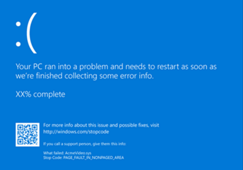
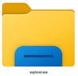
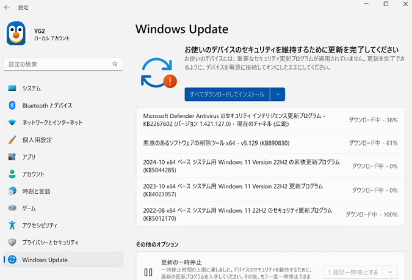

本記事はマイクロソフト社員によって公開されております。
本記事では、Windows Commercial における各技術エリア (チーム) にて扱う主な担当製品や学べる技術について紹介します！
今回は以下 3 チームについてピックアップしてご案内します。
目次：
- Performance
- Networking
- Device and Deployment
1. Performance
Performance チームでは、ブルー スクリーンやフリーズによるコンピューターの動作の停止や、「いつもより処理が遅い…」といったパフォーマンスに関する調査を主に行っています。当チームが専門とする Windows OS の機能はその他にも多くありますが、代表的なものをご紹介いたします。
Blue Screen / フリーズ / スローダウン
ブルースクリーンが発生した際、処理や操作が中断しコンピューターは再起動しますが、その裏では原因調査を可能とすべくメモリ上の情報をダンプ ファイルに書き出す作業が行われています。
一般的にブルー スクリーンが発生しないことが最良ではありますが、「これ以上動作を継続しないほうがよい」と判断された場合の処理としては想定された動きとなります。なお、私たちはすべての Windows 製品を対象にサポートを提供しており、物理マシンはもちろん Azure などクラウド上の VM やコンテナーに対しても調査を行っております。

エクスプローラー
みなさまも使ったことがある機能ではないでしょうか。毎日触るという方もいらっしゃるかもしれません。“エクスプローラー” と聞くと、フォルダーを開いた際のウィンドウをイメージされると思います。実際には、デスクトップやタスク バー、スタート メニューなど Windows OS のインターフェイスのうち非常に広範囲がエクスプローラーにより実現されています。OS のバージョンや、適用されている更新、お使いの環境の構成などによっても内部の処理が大幅に異なるため、私たちエンジニアも日々勉強しています。細かいカスタマイズをご希望のお客様も多いため、奥深く幅広い知識が必要です。

Windows Subsystem for Linux, etc…
「Windows のサポートで？」と思われるかもしれませんが、最近の Windows OS ではクラウドやモバイルへの親和性を考えた機能がたくさん盛り込まれています。その結果、 Unix / Linux でおなじみのコマンドが続々と搭載されていたり、Linux ディストリビューションを丸ごと Microsoft Store から取得してコンテナ上で動作させることもできるようになってきました。これらのコマンドは、Windows 上での利用のため機能が追加されていたり、内部の処理がオリジナルと異なっていることがあります。ソースコードを比較するような調査も多く、エンジニア同士でテクニカルな議論を繰り広げることもよくあります。
～学べる・活かせる技術について～
当チームに特有の性格として、処理性能や OS 自体のエラー処理を扱っておりますので、下記のような知識が有用です。いずれも必須ではございませんが、ご入社後より早い段階でご活躍いただけると考えられます。
- コンピューター サイエンスの知識 (プロセッサの演算や性能評価など)
- Linux や UNIX 関連の知識や資格
- ネットワークや仮想化関連の知識や資格
- ハードウェア選定・設計の経験など
2. Networking
私たちは OS のネットワーク機能全般を担当しているチームです。以下に当チームとして担当している機能をいくつか紹介しますが、他のチームで紹介されている OS の各機能や、さらには Azure、Microsoft 365 などの多数の製品・機能は「通信」を前提に提供されています。このため、これらの製品のサポート チームとも頻繁に協業しながら、お客様の問題解決にあたっています。
Windows に実装されている多数のネットワーク プロトコル
Windows には IP / TCP / UDP / QUIC / DHCP / DNS / SMB / HTTP など、多岐にわたるプロトコルが実装されています。また接続形態としてもイーサネットだけでなく Wi-Fi やモバイル ブロードバンド ネットワークなどが利用可能です。ユーザー インターフェイスや API の裏側でこれらを提供する OS の機能は、全て当チームでサポートしています。
ネットワーク管理から仮想化技術まで
Windows は DNS サーバー / DHCP サーバー / RADIUS サーバー / ファイアウォールなど、ネットワーク管理のための機能も備えています。また RDMA や RSS、VMMQ などのネットワーク インターフェイスと連動する高速化技術や、先進的なネットワーク仮想化を実現する Software Defined Networking (SDN) なども取り扱います。
～学べる・活かせる技術について～
- Windows では複数のレイヤーに跨る数々のプロトコルが実装されています。この汎用的な技術を、ネットワーク設計・構築などとは違った OS (ソフトウェア) の視点から学ぶことができます。
- トラブルシューティングにおいては、パケット キャプチャーや OS の各種トレース ログなどからレイヤーを縦断して問題箇所を絞り込み、事象に対してクリティカルな問題点を特定する力が身に付きます。
- 接する技術と製品が非常に多いため、ネットワーク インフラストラクチャーの設計・構築経験はもちろん、ソフトウェア開発や他 OS の管理経験も、活かせる場面がきっとあります。
3. Device and Deployment
Device and Deployment チームでは、Device 制御に関わるお問い合わせから、OS のイメージ展開 (Deployment)、Windows Update や BitLocker などの製品を扱っております。お問い合わせを多くいただくテクノロジーをいくつかピックアップし以下に簡単に紹介させていただきます。
Windows Update
Windows Update は、更新プログラムのダウンロードとインストールを行います。更新プログラムには、新機能を追加する機能更新プログラムと、主にセキュリティ修正を提供する品質更新プログラムがあります。品質更新プログラムによってセキュリティが向上し、機能更新プログラムによって新しい機能が拡張されます。

BitLocker
BitLocker は、データを保護するための暗号化機能を提供します。BitLocker を使用すると、ドライブ全体を暗号化し、データの不正アクセスを防ぐことができます。万が一デバイスが紛失や盗難に遭った場合でも、データが保護されます。
デバイスやドライバー制御
デバイスやドライバーの制御は、システムのセキュリティや安全性を確保するために重要です。これには、”デバイスのインストールの制限” のグループ ポリシーや App Control for Business (旧称: Windows Defender Application Control) などお客様の要件に応じた提案を行います。
～学べる・活かせる技術について～
担当製品固有の唯一無二の深い知識
Windows Update や BitLocker は、マイクロソフトが提供している独自の機能であり、経験と自己研鑽を積むことでマイクロソフトでしか会得することができない深い知識が手に入ります。もし、これまでに Windows Update や BitLocker の設定やトラブルシューティングの経験があり、楽しい・もっと知りたいという気持ちがあれば素養は十分です！
汎用的な知識も習得可能
Windows Update の案件では、製品固有の設定知識やログ解析を行いますが、更新プログラムは基本的にネットワークを経由してダウンロードするため、一般的なネットワーク知識も必要となります。
USB デバイスが認識しない案件では、デバイス自体の問題であるのか、またはそれ以外の問題であるか判断するために多くの知識を必要とします。具体的には、デバイスからの応答 (ハードウェア割り込み) があるのか、デバイスの初期化・適切なデバイス ドライバーが選択・インストールされているのかなど、幅広い知識が必要です。USB デバイスに関する案件では、これらデバイスは USB の規格に準拠するため、USB-IF が公開している USB に関する規格書 (Specification) を確認します。このように私たちは、Windows OS に関する専門の知識からデバイスに関する一般的な規格の知識を学ぶことができます。
調査手法としては、製品専用のトレース ログ解析、プロセスや OS (カーネル) のダンプ解析、Windows パフォーマンス レコーダーによる解析、ライブデバッグなど、問題に応じて使い分けます。
次回は、残りの 3 チーム（User Experience, Windows Storage & High Availability, Directory Services）についてフォーカスをあてて紹介予定となります！
<関連ブログ>